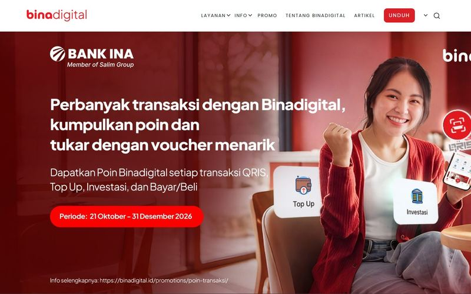

Website profesionalyang bikin bisnis Andadipercaya pelanggan
Company profile, landing page UMKM, dan toko online. Dikerjakan langsung oleh developer berpengalaman 5 tahun yang pernah menangani sistem untuk perusahaan besar. Cepat, rapi, dan mudah ditemukan di Google.
- Konsultasi gratis
- Tampil rapi di HP
- Revisi sampai cocok


Pelanggan mencari di Google dulu, baru membeli
Media sosial saja belum cukup. Website membuat bisnis Anda terlihat serius, mudah ditemukan, dan bisa dihubungi kapan pun.
Lebih dipercaya
Bisnis dengan website dan domain sendiri terlihat lebih kredibel di mata calon pelanggan, mitra, dan investor.
Mudah ditemukan
Website yang disusun rapi untuk SEO membantu bisnis Anda muncul saat orang mencari produk atau layanan Anda.
Jualan 24 jam
Katalog, harga, lokasi, dan tombol WhatsApp selalu tersedia, bahkan saat Anda sedang tidur.
Pilih sesuai kebutuhan bisnis Anda
Dari usaha rumahan sampai perusahaan, saya bantu dari ide sampai website online.
Landing page UMKM
Satu halaman yang langsung mengarahkan pengunjung untuk menghubungi atau membeli.
- Cocok untuk kuliner, fashion, jasa
- Tombol WhatsApp & Google Maps
- Selesai cepat
Company profile
Website multi-halaman yang menampilkan profil, layanan, portofolio, dan kontak perusahaan.
- Profil, layanan, galeri, artikel
- Bisa diubah sendiri lewat dashboard
- Email bisnis profesional
Toko online & custom
Katalog produk, keranjang, ongkir, sampai sistem khusus sesuai alur bisnis Anda.
- Katalog & pemesanan
- Dashboard admin
- Integrasi pembayaran / sistem lain
Harga jelas, tanpa biaya tersembunyi
Semua paket sudah termasuk desain responsif, setup, dan bantuan sampai website online.
UMKM Starter
Untuk usaha yang baru mulai online
Mulai tahun ke-2: ±Rp 300–500rb/tahun untuk perpanjangan domain & hosting
- 1 halaman landing page
- Domain .my.id + hosting 1 tahun
- Tombol WhatsApp & Google Maps
- Tampil rapi di HP
- 2× revisi
Company Profile
Untuk perusahaan & bisnis yang berkembang
Mulai tahun ke-2: ±Rp 1–1,5jt/tahun untuk perpanjangan domain & hosting
- Hingga 6 halaman
- Domain .com + hosting 1 tahun (atau .co.id, syarat NIB/NPWP/akta usaha)
- Dashboard untuk ubah konten sendiri
- SEO dasar & Google Search Console
- Email bisnis dari hosting (nama@bisnisanda.com)
- 3× revisi + gratis maintenance 1 bulan
Toko Online / Custom
Untuk fitur khusus sesuai kebutuhan
Domain & hosting: mulai ±Rp 1,5jt/tahun, sejak tahun pertama
- Katalog produk & pemesanan
- Dashboard admin & laporan
- Integrasi pembayaran / ongkir
- Login pelanggan
- Gratis maintenance 3 bulan
- Domain & hosting dihitung terpisah sesuai kebutuhan server
Harga akhir menyesuaikan kebutuhan. Pembayaran bisa bertahap: DP 50%, pelunasan setelah website selesai dan Anda puas.
Website yang pernah saya kerjakan
Beberapa proyek untuk perusahaan di Indonesia. Semuanya masih aktif dan bisa Anda kunjungi.
Castlerock Asia
Website perusahaan dengan tema custom dan backend khusus.
Vinilon Group
Website grup perusahaan manufaktur, dibangun sesuai desain.
Antasari Place
Website properti dengan tema custom sesuai desain klien.

Toyota Astra Financial Services
Pengembangan backend platform publik dan sistem admin.

Bina Digital
Website layanan perbankan digital dengan tema custom dan backend khusus.
Aplikasi web custom
Peta kereta real-time, dashboard, platform pesan multi-channel, dan lainnya.
4 langkah sampai website Anda online
- 1
Konsultasi
Ceritakan bisnis dan kebutuhan Anda lewat WhatsApp. Gratis, tanpa kewajiban.
- 2
Penawaran & DP
Saya kirim rincian fitur, harga, dan jadwal. Mulai setelah DP 50%.
- 3
Desain & revisi
Anda melihat progres secara langsung dan bisa meminta revisi.
- 4
Online & serah terima
Website tayang, Anda dapat akses penuh plus panduan cara mengelolanya.
Dikerjakan langsung oleh developer, bukan dilempar ke pihak lain
Tapak Digital adalah jasa pembuatan website dari Yogyakarta yang membantu bisnis Anda melangkah ke dunia online. Dikerjakan oleh web developer yang selama 5 tahun membangun website dan sistem untuk perusahaan seperti Toyota Astra Financial Services, Koperasi Astra, dan berbagai bisnis lokal.
Anda berkomunikasi langsung dengan orang yang membuat website Anda. Tidak ada perantara, tidak ada salah paham, dan Anda tahu persis progresnya.
- 5 thn
- Pengalaman
- 9+
- Proyek klien
- 100%
- Mobile-friendly
Pertanyaan yang sering ditanyakan
Berapa lama proses pembuatan website?
Landing page UMKM umumnya 3 sampai 5 hari kerja, company profile 1 sampai 2 minggu, dan toko online/custom tergantung fitur. Jadwal pasti saya sampaikan di penawaran.
Saya belum punya logo, foto, atau teks. Bisa dibantu?
Bisa. Saya bantu menyusun teks dasar dan memakai foto/ilustrasi berlisensi. Untuk logo dan foto produk profesional bisa didiskusikan sebagai tambahan.
Apakah saya bisa mengubah isi website sendiri?
Untuk paket Company Profile ke atas, Anda mendapat dashboard untuk mengubah teks, gambar, dan artikel tanpa perlu coding, lengkap dengan panduan cara memakainya.
Bagaimana sistem pembayarannya?
DP 50% di awal, pelunasan 50% setelah website selesai dan Anda setuju dengan hasilnya, sebelum serah terima akses penuh.
Setelah tahun pertama, apa yang perlu dibayar?
Hanya perpanjangan domain dan hosting tahunan. Perkiraan biayanya tercantum di setiap paket di atas, dan angka pastinya saya sampaikan di penawaran agar tidak ada kejutan.
Apakah email bisnisnya memakai Google Workspace?
Tidak. Email bisnis di paket Company Profile memakai layanan email bawaan hosting, bisa dibuka lewat webmail dan dipasang di HP. Kalau Anda ingin Google Workspace atau Microsoft 365, bisa saya bantu setup, dan biaya langganannya dibayar terpisah ke Google atau Microsoft.
Apakah website-nya akan muncul di Google?
Website saya daftarkan ke Google Search Console dan disusun dengan SEO dasar. Posisi di hasil pencarian butuh waktu dan dipengaruhi persaingan, jadi saya tidak menjanjikan peringkat tertentu.
Siap membawa bisnis Anda online?
Ceritakan kebutuhan Anda, nanti saya balas dengan saran dan estimasi harga. Konsultasi gratis, tanpa kewajiban.
- WhatsApp / telepon0896-0201-5445
- Emailkerjasamabowo@gmail.com
- LokasiYogyakarta, melayani seluruh Indonesia